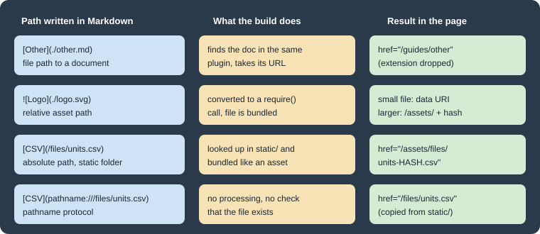

Markdown Features
|
This content was generated with the assistance of AI and should be verified against the official documentation before being relied on in production. |
This page was written against Docusaurus 3.10.2 and checked on 2026-10-26. Docusaurus compiles documents with MDX (see
MDX and React Components) and adds a set of
authoring features on top of plain Markdown. The examples below were built in a scratch site generated by
create-docusaurus@3.10.2 (classic preset, TypeScript) that documents Pocket Units, a tiny units-conversion library
written in Python and C#. The scratch site serves its docs at the site root, has @docusaurus/theme-live-codeblock
and @docusaurus/remark-plugin-npm2yarn 3.10.2 installed, and sets future.v4 to true, as the generated site does.
Admonitions
An admonition is a highlighted block for a note, tip or warning. It is written with three colons, a type, and a closing
line of three colons. The built-in types are note, tip, info, warning and danger. The content is normal
Markdown or MDX, so lists, code blocks and even tabs work inside it.
:::note[Supported units]
Lengths use **metres** as the base unit.
:::
:::tip
A tip without a title.
:::
::::warning[Outer]
Outer text.
:::danger[Inner]
Inner text.
:::
::::
:::info[Styled]{.padding--lg #my-info}
Styled with attributes.
:::Source: Docusaurus docs: Admonitions
The rules shown by the example are:
-
The title goes in square brackets right after the type:
:::note[Supported units]. Without a title, the type name is used as the heading. The older form:::note My Titleis listed in the v3 migration guide as syntax being phased out. -
To nest admonitions, the outer one uses more colons than the inner one (four against three above).
-
Curly braces after the title add CSS classes and an ID. In the scratch build, the last block above rendered as an element with the classes
theme-admonition theme-admonition-infoplusalert--infoandpadding--lgandid=my-info. The five types rendered with the Infima classesalert--secondary(note),alert--success(tip),alert--info,alert--warningandalert--danger. -
Prettier can reformat the directive lines and break them. Leave an empty line before the opening line and after the closing line.
The same output can be produced from JSX with the @theme/Admonition component, which takes a type, an optional
title and an optional icon:
import Admonition from '@theme/Admonition';
<Admonition type="tip" title="Example">
<p>Some text.</p>
</Admonition>Source: Docusaurus docs: Admonitions
Two customisation points exist. To rename or add keywords, pass an admonitions object (keywords and
extendDefaults, which defaults to true) in the options of the docs, blog or pages plugin. To render a keyword with
your own component, map it in src/theme/Admonition/Types.js, spreading @theme-original/Admonition/Types to keep the
defaults. That file cannot be swizzled; you create it yourself.
Code blocks
Fenced code blocks are highlighted by Prism through prism-react-renderer. Everything after the language on the
opening fence line (the metastring) controls the extra features. The next block combines a title, a line range and line
numbers:
```python title="pocket_units/convert.py" {2,4-5} showLineNumbers
def convert(value: float, source: str, target: str) -> float:
base = value * FACTORS[source]
# highlighted by metastring only
return base / FACTORS[target]
```Source: Docusaurus docs: Code Blocks
The build rendered a title bar with the file name, highlighted lines through the class
theme-code-block-highlighted-line, and numbering through a CSS counter on each line. Details:
-
title="..."adds the title bar. Use it for file names. -
{1,4-6}highlights single lines and ranges, counted from 1.showLineNumbersturns numbering on andshowLineNumbers=3starts the counter at 3. -
The languages Prism supports by default are a subset. Add others with
themeConfig.prism.additionalLanguages, for example['csharp', 'python', 'bash', 'toml'](the scratch site loaded these), and restart the dev server. -
The theme comes from
themeConfig.prism.themeanddarkTheme. The highlight colour is the CSS variable--docusaurus-highlighted-code-line-bg.
Magic comments
Instead of counting line numbers, comment directives mark the lines. They are parsed only when the fence has no {...}
range.
```python title="pocket_units/magic.py"
def convert(value, source, target):
# highlight-next-line
base = value * FACTORS[source]
# highlight-start
result = base / FACTORS[target]
return result
# highlight-end
```Source: Docusaurus docs: Code Blocks
The default directives are highlight-next-line, highlight-start and highlight-end. They work inside comments of
the C style (// ..., /* ... */), the JSX style, the Bash style (# ...) and the HTML style. You can define your
own in themeConfig.prism.magicComments; each entry has a className and a line directive and optionally a block
pair. The first entry’s class is also used for the {...} ranges, and an empty array disables highlighting by
comments. The scratch site registered the defaults plus an error class:
prism: {
additionalLanguages: ['csharp', 'python', 'bash', 'toml'],
magicComments: [
{
className: 'theme-code-block-highlighted-line',
line: 'highlight-next-line',
block: {start: 'highlight-start', end: 'highlight-end'},
},
{className: 'code-block-error-line', line: 'This will error'},
],
},Source: Docusaurus docs: Code Blocks
npm commands in three package managers
The @docusaurus/remark-plugin-npm2yarn plugin turns a Bash block marked npm2yarn into tabs for npm, yarn and pnpm.
It is registered in the remarkPlugins option of the docs plugin; sync: true keeps the selection in step across
blocks, and converters lists the managers (default yarn and pnpm).
import npm2yarn from '@docusaurus/remark-plugin-npm2yarn';
// inside presets: [['classic', { docs: { remarkPlugins: [[npm2yarn, {sync: true}]] } }]]Source: Docusaurus docs: Code Blocks
With the plugin installed, the fence ` bash npm2yarn `` around npm install pocket-units rendered three tabs
labelled npm, yarn and pnpm in the scratch build.
Live editor
@docusaurus/theme-live-codeblock turns a JavaScript or JSX block marked live into an editable playground with a
rendered preview. Install it and add it to themes:
npm install --save-exact @docusaurus/theme-live-codeblock@3.10.2themes: ['@docusaurus/theme-live-codeblock'],```jsx live
function Demo() {
const [m, setM] = React.useState(1);
return (
<label>
Metres: <input type="number" value={m} onChange={(e) => setM(Number(e.target.value))} />
{' '}= {(m / 0.3048).toFixed(3)} feet
</label>
);
}
```Source: Docusaurus docs: Code Blocks
The build succeeded and the page contained the playground container, header and editor. The editor itself runs in the
browser, so interaction was not tested here. Imports are not allowed inside the editor: all of React is in scope, and
extra components are added by swizzling ReactLiveScope (npm run swizzle @docusaurus/theme-live-codeblock
ReactLiveScope -- --eject) and adding them to the exported object. Add noInline for code with several components or
variables; you then call render(...) yourself at the end.
For a code block built from JSX, the @theme/CodeBlock component takes language, title and showLineNumbers
props and a plain string as its child. Highlighting only applies when the child is a string.
Tabs
Tabs show alternatives, such as the Python and C# versions of one call. They are the Tabs and TabItem components
and must be imported in the document. Markdown inside tabs needs blank lines around it, otherwise it is read as raw
text:
import Tabs from '@theme/Tabs';
import TabItem from '@theme/TabItem';
<Tabs groupId="language" queryString>
<TabItem value="py" label="Python" default>
```python
from pocket_units import convert
print(convert(1, "mile", "metre"))
```
</TabItem>
<TabItem value="cs" label="C#">
```csharp
Console.WriteLine(Converter.Convert(1, "mile", "metre"));
```
</TabItem>
</Tabs>
<Tabs groupId="language">
<TabItem value="py" label="Python">Python install: pip.</TabItem>
<TabItem value="cs" label="C#">C# install: NuGet.</TabItem>
</Tabs>Source: Docusaurus docs: Tabs
The two tab sets above share groupId="language", so choosing C# in one switches the other, and the choice is saved in
localStorage for the next page. The values do not have to match between groups; a group lacking the chosen value
keeps its current tab. Group IDs are global to the site. The build produced the two tab lists as expected.
| Prop | Meaning |
|---|---|
|
Identifier of the tab, used by |
|
Heading text of the tab. |
|
Opens this tab first. Otherwise the first tab is shown. |
|
Extra props for the tab heading, such as |
|
The |
|
Array of |
|
Synchronises all tabs with the same ID and remembers the choice. |
|
Stores the choice in the URL, for example |
|
Renders only the selected tab. By default all tabs are rendered at build time so that search engines can index hidden tabs. |
|
Class added to the component. |
A defaultValue that matches no child fails the build. With defaultValue="zz" and a single tab a, the scratch
build stopped with:
Docusaurus error: The <Tabs> has a defaultValue "zz" but none of its children has the corresponding value.
Available values are: a. If you intend to show no default tab, use defaultValue={null} instead.Links and assets
Docusaurus distinguishes URL paths from file paths in links.
-
[x](./installation)is a URL path. It is not processed and is resolved by the browser against the page URL, so it breaks whentrailingSlashchanges. -
[x](./installation.mdx)is a file path. It is converted to the URL of that document, the extension is dropped, and a moved file or a changed slug does not break the link. Versioned docs link to the same version.
Relative file paths resolve against the current file’s folder (doc2.mdx, subfolder/doc3.mdx, ../other/doc4.mdx).
A path starting with / resolves from the content root, usually docs/. Paths that start with /docs/, /blog/ or
@site/ resolve from the site root and need manual updates when you version or localise. A file reference works only
when the source and the target are handled by the same plugin instance, so a blog post linking to a doc must use a URL
path. In the scratch build, [x](./other.md) and [x](/guides/other.md) both became href=/guides/other. A file link
to a missing document did not stop the build here; it printed the warning "Markdown link with URL ./missing.md in
source file … couldn’t be resolved" and the build only failed later for an unrelated reason.
Images and downloadable files follow the same idea. Markdown image and link paths are turned into require() calls, so
the bundler copies the file, adds a content hash for caching and applies baseUrl:
* [Relative file link](./other.md)
* [Doc-root link](/guides/other.md)
* [Download CSV](/files/units.csv)
* [Escape hatch](pathname:///files/units.csv)

Source: Docusaurus docs: Assets

Figure: the path form decides whether the target is a document, a bundled asset, a static file or untouched.
The scratch build produced these results:
Download CSV href=/assets/files/units-150c40903483a82e18406cd96663a378.csv
Escape hatch href=/files/units.csv (copied unchanged from static/files)
Logo, Static logo src=data:image/svg+xml;base64,... (small SVGs were inlined)An absolute path such as /img/logo.svg is looked up in the configured static directories (static/ by default). The
pathname:// protocol skips all of this: the path is emitted as written and not checked, which suits files that must
keep a fixed URL. In JSX use require('./file.png').default or an import, because only Markdown syntax is converted
automatically. For light and dark variants the @theme/ThemedImage component takes sources={{light, dark}}, and an
SVG imported as a component can be styled with CSS.
Headings and tables of contents
Every heading gets an ID generated from its text (### Hello World becomes hello-world). To fix the ID, add a comment
at the end of the heading. The official page on tables of contents shows {/* #my-explicit-id */} for MDX and
<!-- #my-explicit-id --> for CommonMark .md files, and describes {#id} as no longer valid MDX syntax, kept only
through markdown.mdx1Compat.headingIds. In the scratch site (MDX, future.v4 on) the heading
### Deeper heading {/* #deep-id */} rendered with id=deep-id, and a link [x](#deep-id) pointed at it. The command
docusaurus write-heading-ids adds explicit IDs to all documents; its --syntax option accepts classic or
mdx-comment.
The table of contents on the right of a page lists h2 and h3 headings by default. Its range can be changed:
-
Site-wide, in the theme configuration:
themeConfig.tableOfContentswithminHeadingLevelandmaxHeadingLevel. -
Per document, in the front matter:
toc_min_heading_levelandtoc_max_heading_level. This changes only the side table, not inline ones.
An inline table of contents inside the page body uses the toc variable that MDX exposes in every document, a flat
array of value, id and level, together with the TOCInline component:
---
toc_min_heading_level: 2
toc_max_heading_level: 4
---
import TOCInline from '@theme/TOCInline';
<TOCInline toc={toc} minHeadingLevel={2} maxHeadingLevel={3} />In the scratch build the side table listed the h2 headings plus the h3 and h4 headings (Deeper heading, Level four),
following the front matter. To filter the inline list further, pass toc.filter(...) as the toc prop.
Head metadata
Search and social tags come from front matter first. The docs and blog plugins accept description, keywords and
image; description is written to both the description and og:description tags. For anything else, a <head>
element in the document body is turned into entries of the page <head> (it is built on the Head component, which is
based on react-helmet). Both mechanisms were used in the scratch page:
---
title: Markdown features
description: Markdown features demo for Pocket Units.
keywords: [pocket units, conversion]
image: /img/docusaurus-social-card.jpg
---
<head>
<link rel="canonical" href="https://example.com/guides/features" />
<meta name="pocket-units:audience" content="developers" />
</head>Source: Docusaurus docs: Head metadata
The built HTML contained:
<title data-rh=true>Markdown features | My Site</title>
<meta data-rh=true name=description content="Markdown features demo for Pocket Units."/>
<meta data-rh=true property=og:description content="Markdown features demo for Pocket Units."/>
<meta data-rh=true name=keywords content="pocket units,conversion"/>
<meta data-rh=true property=og:image content=https://your-docusaurus-site.example.com/img/docusaurus-social-card.jpg />
<meta data-rh=true name=pocket-units:audience content=developers />
<link data-rh=true rel=canonical href=https://example.com/guides/features />Note that a relative image is turned into an absolute URL using the site url. More site-wide metadata is covered in
SEO and Static Assets.
Pitfalls and version notes
-
With
future.v4on (the generated default), HTML comments in.mdand.mdxfiles are not accepted by the MDX parser; use{/* comment */}. -
:::note My Titlestill exists for compatibility but is the form being phased out; write:::note[My Title]. -
Tabs and code fences inside JSX need blank lines around the Markdown.
-
Magic comments and
{...}ranges do not mix: when a range is present the comments are ignored. -
The editor of a live block runs only in the browser, so it cannot be checked from the HTML of a static build.